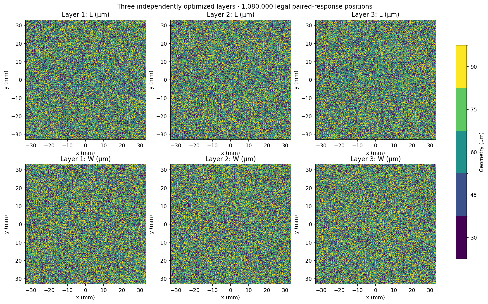
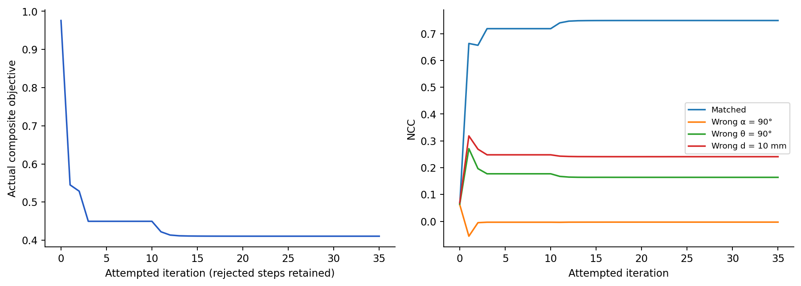
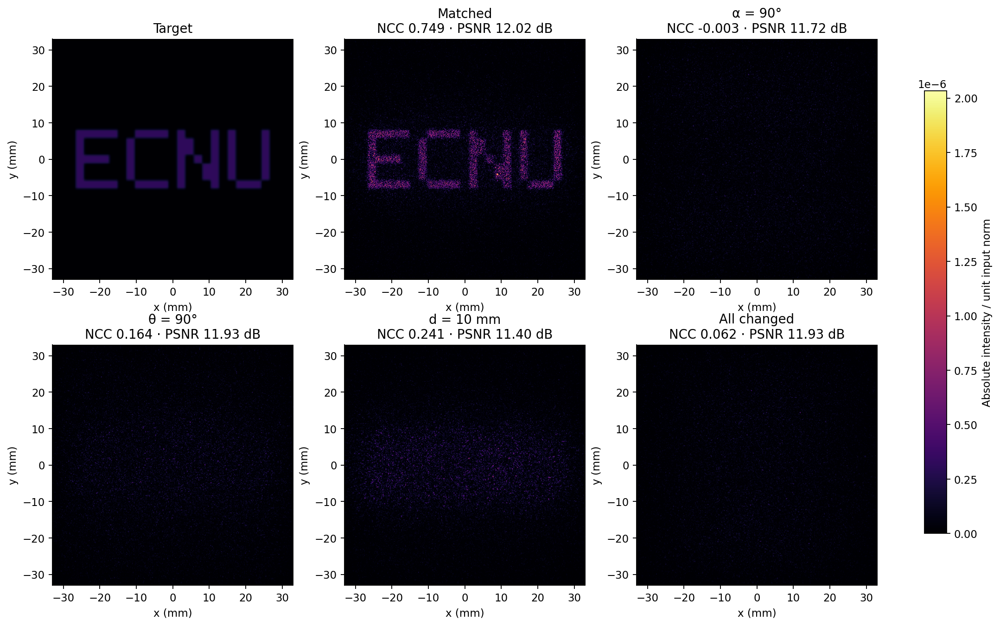
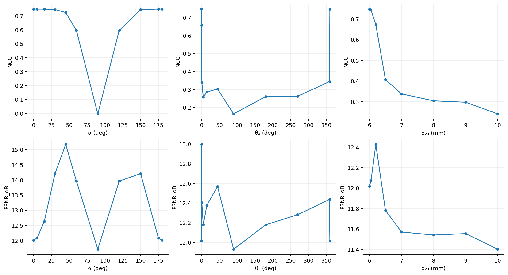
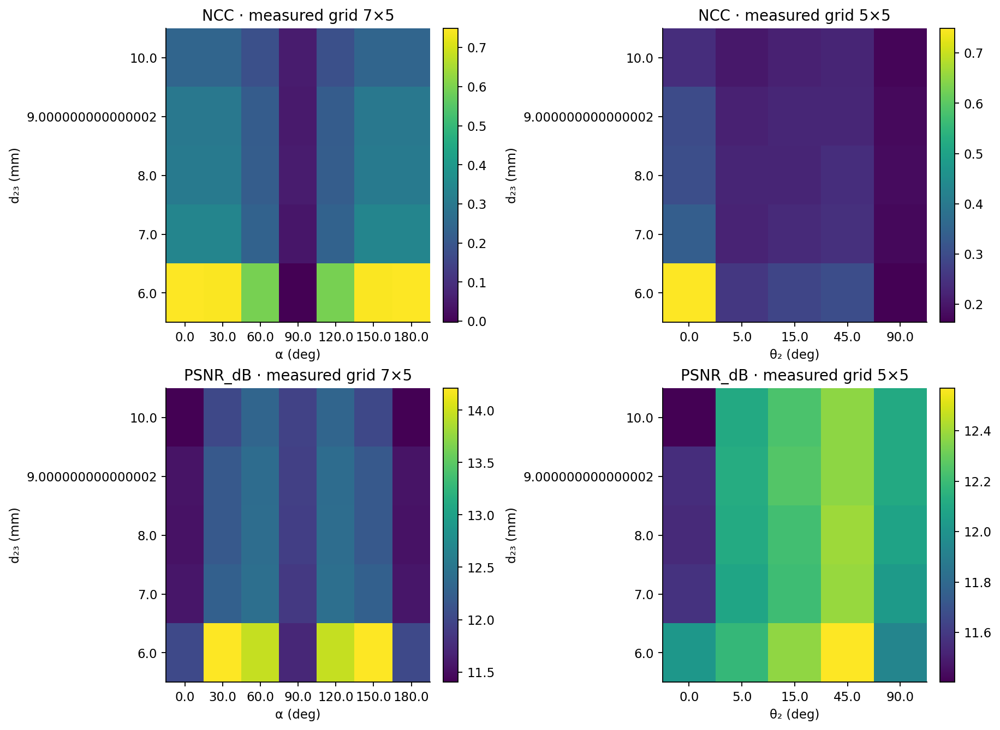
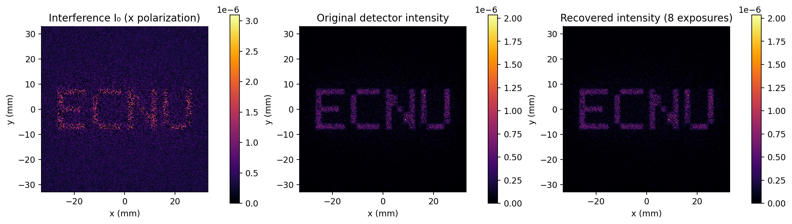
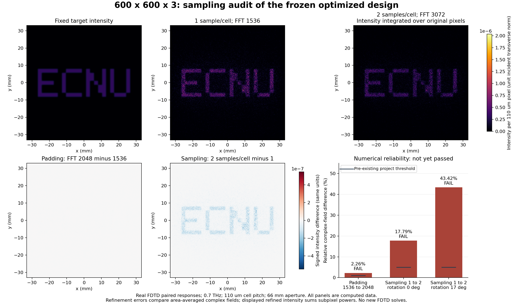

← 返回Trikey三维与条件查看600 × 600 × 3：已计算成果
真实结构、固定器件的72个传播条件与可复核指标。此页是预计算结果记录，不运行Python或FDTD。
数值采样验收仍FAIL；这些结果不代表已收敛的定量器件模型，也不证明密码学安全。
实际规模与结果
共1,080,000个位置，选用25种真实FDTD几何的成对复响应。35轮离散优化，没有复制或放大旧16×16图。
匹配参数：α=0°、θ₂=0°、d₂₃=6 mm；NCC 0.7490，PSNR 12.02 dB，SSIM 0.0344。低SSIM与实际能量偏差保留，没有逐图max归一化修改指标。
0.7 THz，周期110 μm，孔径66 mm。文献参数假设、局部周期/对角Jones/单向传播近似仍然存在。
未通过的数值检查
| 检查 | 复场差异 | 门槛 |
|---|
| full600 padding 1536 vs2048 fixed detector | 2.263% · FAIL | 1% |
| full600 two samples per cell physical pixel average | 17.786% · FAIL | 5% |
| full600 theta17 two samples per cell physical pixel average | 43.416% · FAIL | 5% |
α与180°全局符号等价，整层转一周也等价。有限错钥测试不能证明连续域安全。

三层六张尺寸图。每个位置的L、W及x/y复响应均来自同一个真实FDTD库编号。
真实离散优化过程，未接受的迭代没有删去；初始随机结构只是基线。
固定600结构上的实际探测强度；全图使用相同色标，所有指标使用固定目标强度和范围。
单参数真实重算曲线。连线只连接已测点，未对未计算条件伪造结果；任意旋转仍有采样误差。
有限的α–d和θ–d实测质量图；坐标为离散条件，未作连续插值或安全位数推算。
新增理想参考光假设下，x偏振一张干涉图及双偏振四步相移恢复；各面板色标明确，8次曝光、无噪声、同探测面。
最终600结构的独立采样检查：标称0°、17°与补零差异均保留；实际失败项不随图形改善而取消。